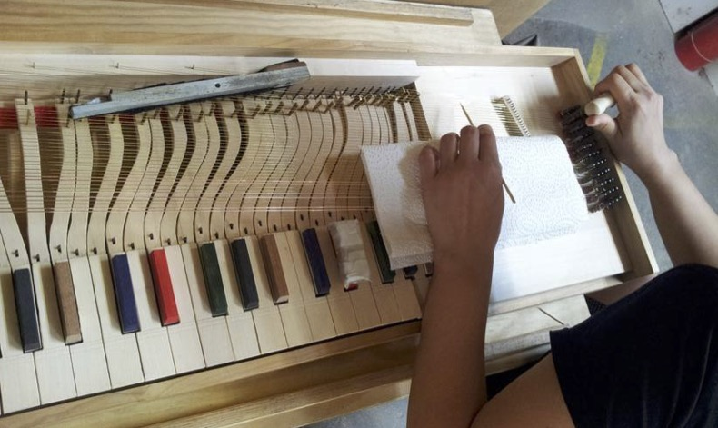
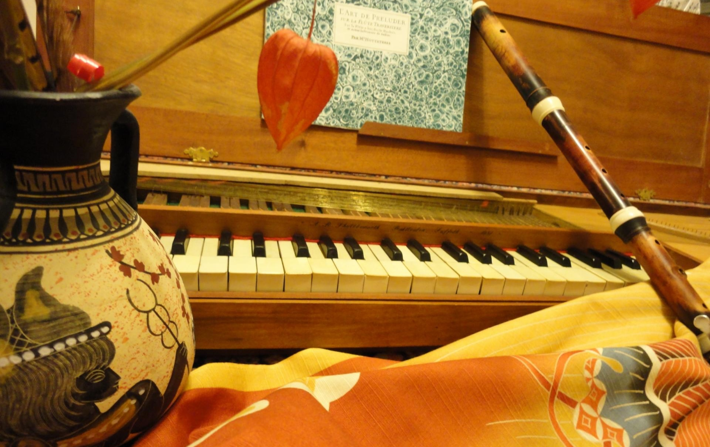

italiano
english
deutsch
日本語
試聴
製作ワークショップ
ワークショップ講師
連絡先
クラヴィコード・トラべル ピアノ製作＆演奏講習会・ワークショップ
”ご自分自身で製作、演奏…”
ワークショップ・講習会所要期間: ７日間

|
ワークショップ
in ヴェネツィア（イタリア）
冬期受講
申込締切日：6月30日
♪♪♪♪♪♪ ギャラリー ♪♪♪♪♪♪♪
ワークショップ
in ドレスデン（ドイツ）
夏期受講
申込締切日：4月30日
♪♪♪♪♪♪ ギャラリー♪♪♪♪♪♪♪
→連絡先
|
ワークショップについて
ご自分自身のクラヴィコード製作を通して、基本的な演奏テクニックを学んでみませんか?!七日間でご自分専用クラヴィコードが完成します。
・音域 C-c³
・フレッテッド
・大きさ 約300 × 100 × 980 mm
・重さ 約8kg
・取手付き構造で簡単に持ち運び自在
外観がすでに加工された基本キットから始められます。（ご希望に応じて、一番初め、何枚かの木の板の状態から着手していただくことも可能です。）全ての製作工程は、自動・電動ではなく、昔ながらの手動式の工具で製作していただきます。ご自分で使い慣れた金槌、糸鋸、汚れても良い作業着、耳栓、そして創造性豊かなやる気と音楽表現力を製作時にお持ちください！
全ての資材と工具貸出料は、ワークショップ受講料金に含まれています。お願い：食事は各自でご自由にご準備ください。
ワークショップ受講料金とワークショップ期間は、変動いたしますので随時お問い合わせ願います。
夏期受講：ドレスデン（ドイツ）”クラヴィコード庭園”にて
冬期受講：ヴェネツィア（イタリア）または、大阪にて
こちらで詳細をご覧いただけます→クラヴィコード演奏とピアノ演奏について[pdf]>

|

|
↑サイトトップへ
試聴
F. タッレーガ - "Recuerdos de la Alhambra"
W. A. モーツァルト, オペラ「ドン ジョヴァンニ」より - "Deh vieni alla finestra"
F. タッレーガ - "Asturias"
中部ドイツラジオ放送局 - "聴衆が推薦する文化コーナー"より

部屋でクラヴィコードとフルートを奏でる二人の音楽家 ”Zwei Musikanten mit Clavichord und Querflöte in einem Innenraum”
ドイツ人画廊、不明（1740年）
(http://www.kunst-fuer-alle.de/deutsch/kunst/kuenstler/kunstdruck/akg-anonymous/15806/1/141557/musikanten-mit-clavichord-u-querfloete/index.htm)

Johannes
Keck, De cantu et musica sacra: Grundrisszeichnung eines
Clavichords, 1442
(http://www.musiklexikon.ac.at/ml/musik_K/Klavichord.xml)
↑サイトトップへ
ワークショップ講師・演奏家：
奥野 知美（おくの ともみ） 1979年大阪生まれ。大阪芸術大学演奏学科フルート専攻及び、ウィーンコンセルヴァトリウム大学卒業。バロック・フルートの魅力に魅せられ、西洋古学を専攻。マイスタークラスをドイツ、オランダ、イギリス、フランスにて受講。ヨーロッパ各地で独自の創作演奏活動に精を出す。
マーティン ロッター 1968年クロスターノイブルク（オーストリア）生まれ。ウィーン芸術音楽大学クラリネット・ピアノ専攻、ウィーン工科大学物理学専攻博士号を取得卒業。ウィーン・シュランメル音楽”グラスシェルベン四重奏楽団”創始者の一人で、g管ウィーン・ミニ・クラリネット”ピックシューセン ホルツル”奏者として、ウィーン聴衆を魅了させる。：www.glasscherben.at
以上二人は、熱情とユーモア溢れる独特のスタイルで、後進の指導にもあたる。個人レッスン申し込み、随時受付中！
音楽講習会 in ヴェネツィア（イタリア）
↑サイトトップへ
Kontakt:
operamania[at]icloud.com

↑サイトトップへ
Link:
Tomomi
Okuno
Martin
Rotter
OPERAMANIA
- die kleinste Oper der Welt
↑サイトトップへ
Impressum
Datenschutzerklaerung,
last updated on 16th February, 2024